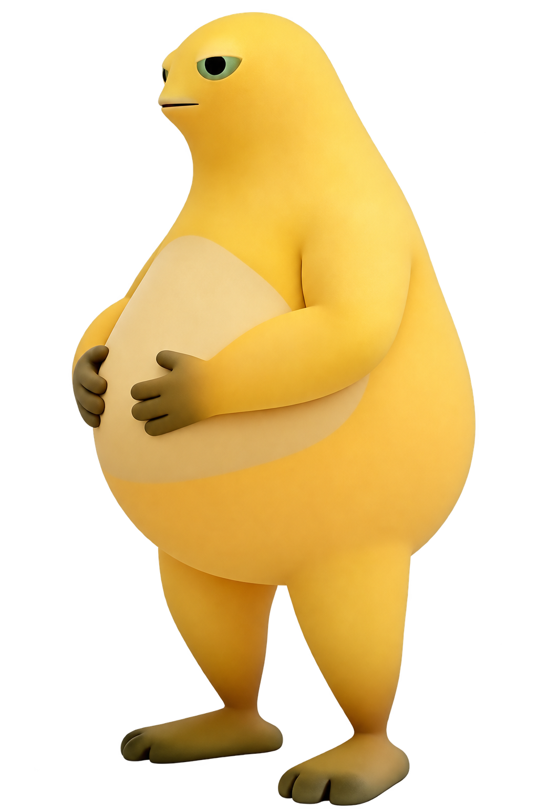

m.
MILK HOP
奶蛙跳一跳
A LITTLE JUMP, A LITTLE JOY.
?
本次得分
0
每一跳，都是小进步
最佳
0
奶蛙的跳跃冒险
今天，也要
轻轻一跃。
跟着奶蛙，慢慢跳远一点。
按住蓄力，松手跳跃
0%
按住 · 蓄力起跳
✦
按住任意空白处也可以跳
SPACE
按住空格也可以跳
慢一点，也能跳很远
✳
奶蛙正在赶来…
×
HOW TO HOP
一按一松，
快乐起跳。
按住屏幕
奶蛙会蹲下蓄力，按得越久跳得越远。
松开手指
奶蛙会自动跳向下一个平台，注意别用力过头。
瞄准中心
落地得 1 分，连续落在中心可得 2、4、6…分，最高 10 分。
知道啦，出发！
NICE LITTLE ADVENTURE

休息一下，再跳一次
每一次出发，都算数。
0
本次得分
最佳记录 0 分
再跳一次
↗